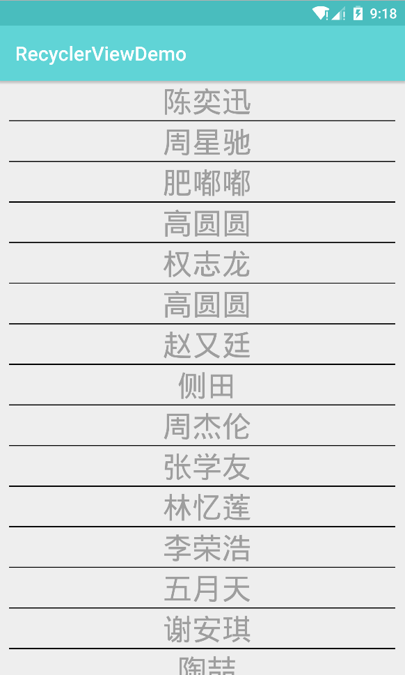
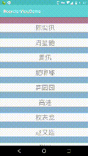

RecyclerView性能和自由度相比ListView强大很多,但很恼人的是它没有像ListView一样默认提供分割线.
刚接触RecyclerView,用过才发现RecyclerView没有分割线过后,遂到网上搜解决办法才发现自定义一个ItemDecoration只要一条黑线还要写代码,好麻烦,不知道有没像我一样懒得折腾上网搜现成的,粘贴到项目直接用.
拖了很久才去解决这个问题,上网大致看了一下教程,其实不难而且自定义功能很强大.
首先新建一个类覆写ItemDecoration里面有三个方法:
public class SimpleItemDecoration extends RecyclerView.ItemDecoration {
public SimpleItemDecoration(Context context) {
}
public void onDraw(Canvas c, RecyclerView parent, RecyclerView.State state) {
super.onDraw(c, parent, state);
}
public void onDrawOver(Canvas c, RecyclerView parent, RecyclerView.State state) {
super.onDrawOver(c, parent, state);
}
@Override
public void getItemOffsets(Rect outRect, View view, RecyclerView parent, RecyclerView.State state) {
super.getItemOffsets(outRect, view, parent, state);
}
}
- onDraw名字很熟悉吧,和View中的onDraw一样,是用来画东西的, 在item上画分割线就靠这个方法了.
- onDrawOver 英文Over的意思在...的上面 ,可以理解成是图层关系,item的内容和分割线是第一层(要在第一层画东西要调用onDraw),而onDrawOver是第二层,位于onDraw的上面
- getItemOffsets 看名字可以知道是设置item的偏移值,其实效果和padding一样.
以上三个方法都是在RecylerView发生滑动的时候触发.
需要注意的是三个方法的都有一个RecyclerView parent,通过这个参数我们可以获取到RecyclerView的属性,例如 parent.getChildCount();获取子View的个数,但是这个并不是获取RecyclerView所有的item个数,而是当前屏幕可见的item个数.
所以画一条分割线需要的代码是这样的:
private int wight;
private int height;
private int item_height;
private int item_padding;
private Paint paint;
public SimpleItemDecoration(Context context) {
wight=context.getResources().getDisplayMetrics().widthPixels;
height=context.getResources().getDisplayMetrics().heightPixels;
paint=new Paint(Paint.ANTI_ALIAS_FLAG|Paint.DITHER_FLAG);
paint.setColor(Color.BLACK);
item_height=DensityUtil.dip2px(context, 1);
item_padding=DensityUtil.dip2px(context, 10);
}
@Override
public void onDraw(Canvas c, RecyclerView parent, RecyclerView.State state) {
super.onDraw(c, parent, state);
int count=parent.getChildCount();
for (int i = 0; i < count; i++) {
View view=parent.getChildAt(i);
int top=view.getTop();
int bottom=top+item_height;
c.drawRect(0,top,wight,bottom,paint);
}
.....
}
运行后得到如下图的效果.

接着把item_height=DensityUtil.dip2px(context, 1);的1改成30,你会发现item的内容和黑色的分割线重合了

因为上面说了item和内容和onDraw中画的内容在同一图层,当然会被出现重合的情况.这个时候getItemOffsets就能派上用场了.只要在原来的item的加个偏移值(效果和在Adpater中为item设置padding的效果是一样的,只是在ItemDecoration统一处理比较合适)onDraw中画的分割线有多高,我就paddingBottom多少.
所以代码是是这样的:
public void getItemOffsets(Rect outRect, View view, RecyclerView parent, RecyclerView.State state) {
super.getItemOffsets(outRect, view, parent, state);
outRect.bottom=item_height;
}
再次运行代码item被挡住的问题就解决了,RecyclerView的自定义ItemDecoration就是这么简单.有点自定义View经验的人理解起来都不会难

分割线不要占满,要有和Left,Right有间距啊?
添加如下代码:
private int wight;
private int height;
private int item_height;
private Paint paint;
private float item_padding;
public SimpleItemDecoration(Context context) {
wight=context.getResources().getDisplayMetrics().widthPixels;
height=context.getResources().getDisplayMetrics().heightPixels;
paint=new Paint(Paint.ANTI_ALIAS_FLAG|Paint.DITHER_FLAG);
paint.setColor(Color.BLACK);
item_height=DensityUtil.dip2px(context, 1);
item_padding=DensityUtil.dip2px(context, 10);
}
@Override
public void onDraw(Canvas c, RecyclerView parent, RecyclerView.State state) {
super.onDraw(c, parent, state);
int count=parent.getChildCount();
for (int i = 0; i < count; i++) {
View view=parent.getChildAt(i);
int top=view.getBottom();
int bottom=top+item_height;
//这里把left和right的值分别增加item_padding,和减去item_padding.
c.drawRect(item_padding,top,wight-item_padding,bottom,paint);
}
....
}

一般用到的分割线根据以上的代码再自己的按照需求稍微修改一下基本都能满足需求了.
之前在网上看到通过自定义ItemDecoration实现仿照旧版的instagram吸顶效果,感觉那种效果很好看,研究了一下发现只要理解了上面文章所说的几个方法实现起来并不难.
先来看最终效果图:

要实现吸顶的效果需要完成这些步骤:
- 首先需要画一条高度足够容下文字和图片的分割线.
- 因为是吸顶效果,所以分割线和传统的分割线一样应该是在每个item的上方而不是下方
- 当前屏幕可见的第一个item的Bottom<=item_height(分割线的高度) 说明可见的第一个item的底部已经超出了分割线的高度,这个时候就应该让第一条分割线随着RecyclerView向上滑动直到滑出屏幕,这个时候第二个item就取代了第一个item变成了第一个item,否则分割线一直固定不动.
- 判断当前屏幕的第一个可见的item是哪个
- 把当前屏幕可见的item进行对比,如果item的内容第一个字相同,则把它们归为一组,用一条分割线显示即可.
先来实现1和2的要求,主要代码部分如下:
private int wight;
private int height;
private int item_height;
private Paint paint;
private float item_padding;
public SimpleItemDecoration(Context context) {
wight=context.getResources().getDisplayMetrics().widthPixels;
height=context.getResources().getDisplayMetrics().heightPixels;
paint=new Paint(Paint.ANTI_ALIAS_FLAG|Paint.DITHER_FLAG);
//更改画笔颜色为自定义的颜色
paint.setColor(context.getResources().getColor(R.color.itemColor));
item_height=DensityUtil.dip2px(context, 30);
item_padding=DensityUtil.dip2px(context, 10);
}
@Override
public void getItemOffsets(Rect outRect, View view, RecyclerView parent, RecyclerView.State state) {
super.getItemOffsets(outRect, view, parent, state);
//因为分割线是在item的上方,所以需要为每个item腾出一条分割线的高度
outRect.top=item_height;
}
@Override
public void onDraw(Canvas c, RecyclerView parent, RecyclerView.State state) {
super.onDraw(c, parent, state);
int count=parent.getChildCount();
for (int i = 0; i < count; i++) {
View view=parent.getChildAt(i);
//分割线不能和item的内容重叠,所以把分割线画在getItemOffsets为item腾出来的位置上.
//所以top需要上移item_height
int top=view.getTop()-item_height;
//bottom同理
int bottom=top+item_height;
c.drawRect(0,top,wight,bottom,paint);
}
}
....
最终实现的效果如图:

注意看陈奕迅这个item的分割线是在item的上面的,并且分割线的高度已经足够容下我们稍后要绘制的内容了.
接着来实现3,怎么样才能让分割线在满足条件的时候动,不满足的时候固定?
这个时候就需要用到代码中一直没覆写的onDrawOver方法了,先来实现固定不动的分割线,代码也是非常的简单,在原来的代码上覆写onDrawOver方法
(这里new了新的画笔paint2,把固定的分割线用半透明红色来作为背景,方便理解效果):
paint2=new Paint(Paint.ANTI_ALIAS_FLAG|Paint.DITHER_FLAG);
paint2.setColor(Color.parseColor("#52ff0000"));
@Override
public void onDrawOver(Canvas c, RecyclerView parent, RecyclerView.State state) {
super.onDrawOver(c, parent, state);
}

接着来实现实现: 当前屏幕可见的第一个item的Bottom<=item_height(分割线的高度)让第一条分割线随着RecyclerView向上滑动直到滑出屏幕,代码如下:
@Override
public void onDrawOver(Canvas c, RecyclerView parent, RecyclerView.State state) {
super.onDrawOver(c, parent, state);
View child0 = parent.getChildAt(0);
//如果第一个item的Bottom<=分割线的高度
if (child0.getBottom() <= item_height) {
//随着RecyclerView滑动 分割线的top=固定为0不动,bottom则赋值为child0的bottom值.
c.drawRect(0, 0, wight,child0.getBottom() , paint2);
} else {
//固定不动
c.drawRect(0, 0, wight, item_height, paint2);
}
}

可以看到滑动时当第二item的顶部和第一个item的底部相互接触到后继续滑动的话第一个item就会慢慢向上滑动,直到第一个item完全画出屏幕,固定分割线立马回到最开始的位置和item2分割线重叠了在一起
,现在可以把paint2换回paint效果会更直观,不上效果图了,可以自己去测试.
对第一次接触ItemDecoration的人来说,难点都已经讲完了,剩下的就是在分割线范围计算出合适的位置调动drawText和drawBitmap画下文字和图片,直接贴上完整的源码:
(在源码注释里面已经把没有讲到的方法大致提了一下实现的原理)
自定义ItemDecoration的代码:
/**
* Created by Lipt0n on 2017/8/26.
*/
public class SimpleItemDecoration extends RecyclerView.ItemDecoration {
private Bitmap bitmap;
private Paint.FontMetrics fontMetrics;
private int wight;
private int itemDecorationHeight;
private Paint paint;
private ObtainTextCallback callback;
private float itemDecorationPadding;
private TextPaint textPaint;
private Rect text_rect=new Rect();
public SimpleItemDecoration(Context context, ObtainTextCallback callback) {
wight=context.getResources().getDisplayMetrics().widthPixels;
paint=new Paint(Paint.ANTI_ALIAS_FLAG|Paint.DITHER_FLAG);
paint.setColor(context.getResources().getColor(R.color.itemColor));
itemDecorationHeight=DensityUtil.dip2px(context, 30);
itemDecorationPadding=DensityUtil.dip2px(context, 10);
this.callback = callback;
textPaint = new TextPaint(Paint.ANTI_ALIAS_FLAG | Paint.DITHER_FLAG);
textPaint.setColor(Color.WHITE);
textPaint.setTextAlign(Paint.Align.LEFT);
textPaint.setTextSize(DensityUtil.dip2px(context, 25));
fontMetrics = new Paint.FontMetrics();
textPaint.getFontMetrics(fontMetrics);
bitmap= BitmapFactory.decodeResource(context.getResources(), R.mipmap.ic_launcher_round);
ScaleBitmap();
}
//bitmap的大小和itemDecorationHeight进行比较对图片进行缩放操作(对性能有追求可以在加载到内存的时候进行压缩)
private void ScaleBitmap() {
Matrix matrix=new Matrix();
float scale=bitmap.getWidth()>itemDecorationHeight?Float.valueOf(itemDecorationHeight)/Float.valueOf(bitmap.getHeight()):Float.valueOf(bitmap.getHeight())/Float.valueOf(itemDecorationHeight);
matrix.postScale(scale,scale);
bitmap= Bitmap.createBitmap(bitmap,0,0,bitmap.getWidth(),bitmap.getHeight(),matrix,false);
}
@Override
public void onDraw(Canvas c, RecyclerView parent, RecyclerView.State state) {
super.onDraw(c, parent, state);
int count=parent.getChildCount();
for (int i = 0; i < count; i++) {
View view=parent.getChildAt(i);
int top=view.getTop()-itemDecorationHeight;
int bottom=top+itemDecorationHeight;
int position = parent.getChildAdapterPosition(view);
String content = callback.getText(position);
textPaint.getTextBounds(content,0, content.length(),text_rect);
if(isFirstInGroup(position)) {
c.drawRect(0,top,wight,bottom,paint);
c.drawText(content, itemDecorationPadding+bitmap.getWidth(), bottom-fontMetrics.descent, textPaint);
c.drawBitmap(bitmap,itemDecorationPadding,bottom-bitmap.getHeight(),paint);
}
}
}
@Override
public void onDrawOver(Canvas c, RecyclerView parent, RecyclerView.State state) {
super.onDrawOver(c, parent, state);
View child0=parent.getChildAt(0);
int position = parent.getChildAdapterPosition(child0);
String content = callback.getText(position);
if(child0.getBottom()<=itemDecorationHeight&&isFirstInGroup(position+1)){
c.drawRect(0, 0, wight, child0.getBottom(), paint);
c.drawText(content, itemDecorationPadding+bitmap.getWidth(), child0.getBottom()-fontMetrics.descent, textPaint);
c.drawBitmap(bitmap,itemDecorationPadding,child0.getBottom()-bitmap.getHeight(),paint);
}
else {
c.drawRect(0, 0, wight, itemDecorationHeight, paint);
c.drawText(content, itemDecorationPadding+bitmap.getWidth(), itemDecorationHeight-fontMetrics.descent, textPaint);
c.drawBitmap(bitmap,itemDecorationPadding,itemDecorationHeight-bitmap.getHeight(),paint);
}
}
@Override
public void getItemOffsets(Rect outRect, View view, RecyclerView parent, RecyclerView.State state) {
super.getItemOffsets(outRect, view, parent, state);
int position= parent.getChildAdapterPosition(view);
//如果不是在同一组就腾出分割线需要的高度
if(isFirstInGroup(position)){
outRect.top=itemDecorationHeight;
}
}
//回调接口,通过该回调获取item的内容的第一个文字
public interface ObtainTextCallback {
String getText(int position);
}
//判断当前item和下一个item的第一个文字是否相同,如果相同说明是同一组,不需要画分割线
private boolean isFirstInGroup(int pos) {
//如果是adapter的第一个position直接return,因为第一个item必须有分割线
if (pos == 0) {
return true;
} else {
//否者判断前一个item的字符串 与 当前item字符串 是否相同
String prevGroupId = callback.getText(pos - 1);
String groupId = callback.getText(pos);
if (prevGroupId.equals(groupId)) {
return false;
} else {
return true;
}
}
}
}
Activity中调用的代码:
recyclerView.addItemDecoration(new SimpleItemDecoration(this, new SimpleItemDecoration.ObtainTextCallback() {
@Override
public String getText(int position) {
return dataList.get(position).substring(0,1);
}
}));
只要理解了最开始提到的ItemDecoration 的3个主要方法,再处理一下文字分组的逻辑实现起来不会太难,花点耐心还是能写出来的.
贴上github源码地址